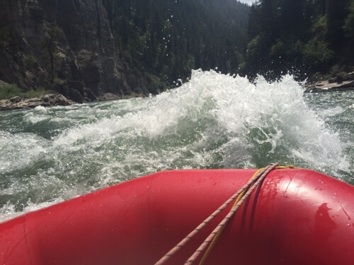

We Run Rivers To Relax
We believe that there is nothing like a river trip for relaxing. That is why we subscribe to the dry oar philosophy of boating. Keeping your oars dry for us means taking time to look around and notice the beauty that surrounds the rivers we love.

We Run Whitewater For The Rush!
That doesn't mean we don't also like rapids. Opposites in all things after all. We believe that that tenseness that comes when you are looking down the tongue of a big string of waves makes you appreciate the calm beautiful water that always follows even more.
Come Run With Us
We invite you to come relax with us on one of the amazing rivers we visit. Check out our trips and let us know which one best suits you. We're waiting to hear from you!